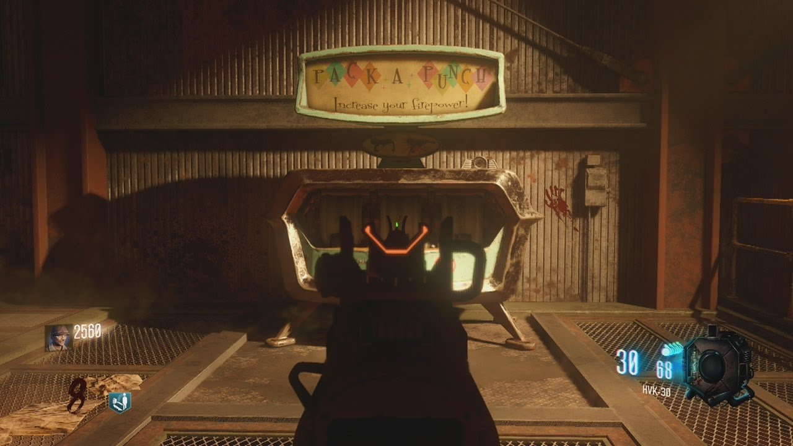
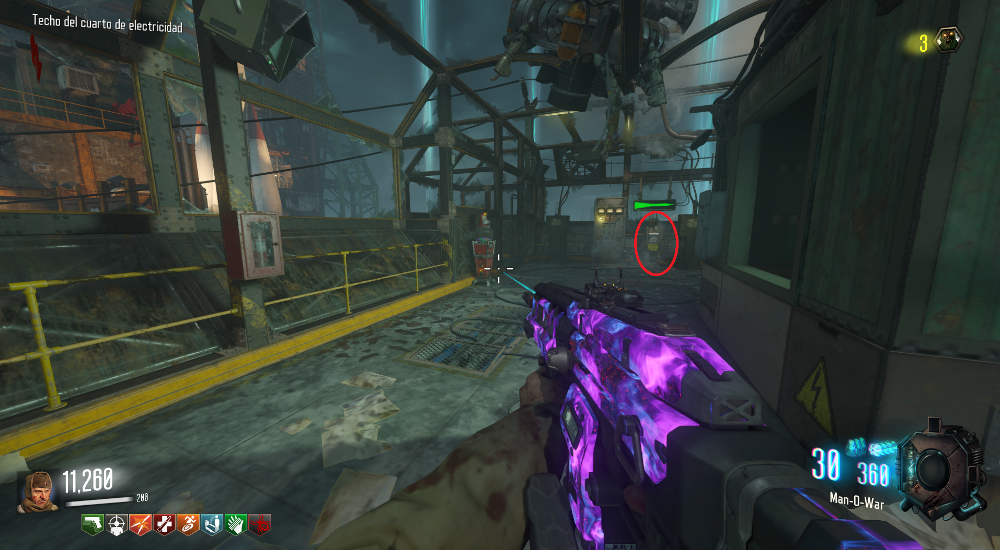
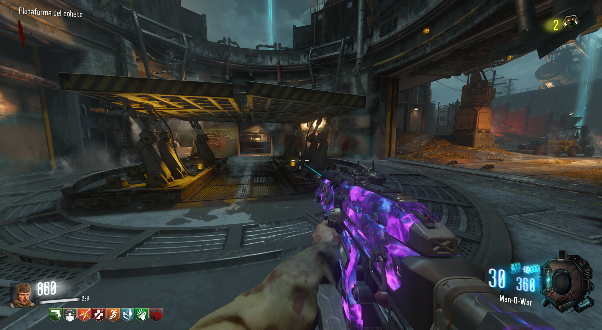

PaP (Ascension)

Tendremos que ir a cada una de las tres lanzaderas del mapa y viajar en ellas hasta el spawn.
Ahora iremos al lado de donde activamos la electricidad y lanzaremos el cohete.

Si hacemos esto correctamente, la sala del cohete estará abierta y podremos acceder al PaP.
